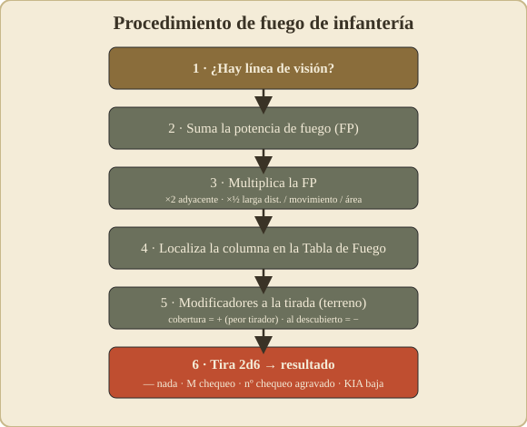

04 – Fuego y combate (infantería)¶
⟵ Movimiento · Índice · Siguiente: Moral y liderazgo ⟶
La idea: no se "mata" directo, se rompe la moral¶
Lo primero que sorprende a quien viene de otros wargames: en Squad Leader el fuego de infantería rara vez elimina unidades de golpe. Lo normal es que el fuego provoque un chequeo de moral en el objetivo, y el resultado de ese chequeo decide si la unidad aguanta, queda inmovilizada, se rompe (huye) o es eliminada.
Es decir: el fuego sirve sobre todo para suprimir y desmoralizar al enemigo, abrir huecos y dejarlo incapaz de reaccionar, para luego rematar con maniobra y cuerpo a cuerpo.
Procedimiento de un disparo de infantería¶

Sigue siempre estos pasos. (Los números exactos —columnas, modificadores— están en tu Tabla de Fuego y tu tabla de modificadores; aquí va el método.)
Paso 1 — ¿Hay línea de visión?¶
Comprueba la línea de visión (LOS) entre el hex que dispara y el objetivo: una línea recta imaginaria entre los centros de ambos hexes. Si un obstáculo la corta (colina más alta, bosque, edificio en medio), no puedes disparar (o el blanco está "oculto"). Ver 06 – Terreno para los detalles de LOS.
Paso 2 — Suma la potencia de fuego (FP)¶
Suma la potencia de fuego de todas las unidades que disparan juntas al mismo objetivo desde el mismo hex (o que combinan fuego según las reglas):
- Pelotones: su factor FP (el primer número, p. ej. el "4" de un 4-6-7).
- Armas de apoyo que usen: suman su FP (una ametralladora añade mucho).
- Varias unidades en el mismo hex pueden combinar su fuego en un solo ataque más potente.
Combinar fuego es casi siempre mejor que disparar por separado: subes de columna en la tabla y el resultado es desproporcionadamente más letal.
Paso 3 — Ajusta la potencia con los MULTIPLICADORES de fuego¶
Esto es lo más importante de entender bien. En el Squad Leader clásico, ciertos factores multiplican la potencia de fuego (te suben o bajan de columna), y son distintos de los modificadores que afectan a la tirada de dados (Paso 5). No los mezcles.
Antes de buscar la columna, aplica a tu FP total los multiplicadores que correspondan (consulta tu carta de "Modificadores del fuego", regla 10.3). Los principales:
- Fuego adyacente (disparas a un hex contiguo): ×2 la potencia.
- Larga distancia (entre tu alcance normal y el doble de tu alcance): ×½.
- Atacante en movimiento (disparas en fuego de avance, tras haberte movido): ×½.
- Fuego de área (el blanco está oculto): ×½.
Más allá del doble de tu alcance, normalmente no puedes disparar.
Los multiplicadores se acumulan. Ejemplo: disparar adyacente (×2) en fuego de avance (×½) deja la potencia igual; disparar a larga distancia en movimiento la deja a ¼.
Paso 4 — Encuentra la columna de la Tabla de Fuego (10.3)¶
Con la FP total (ya multiplicada), localiza la columna correspondiente en la Tabla de Fuego de Infantería. Las columnas van por "saltos" de potencia; tu FP cae en una de ellas.
Paso 5 — Reúne los modificadores a la TIRADA (DRM)¶
Aparte de los multiplicadores del Paso 3, hay modificadores que suman o restan a la tirada de 2d6. En el clásico provienen sobre todo del efecto del terreno (regla 11.1) y del mando:
- Terreno del objetivo: bosque/cráter, tras seto, edificio de madera, tras muro de piedra, edificio de piedra... protegen al objetivo (modificador positivo, peor para el que dispara; cuanto mejor la cobertura, mayor el +).
- Objetivo moviéndose en terreno descubierto: ayuda al que dispara (modificador negativo).
- Mando: algunas situaciones de líder/dotación ajustan la tirada.
En esta tabla, un resultado bajo es peor para el objetivo. Por eso la cobertura suma (aleja del KIA) y un blanco al descubierto en movimiento resta.
Paso 6 — Tira 2d6 y lee el resultado¶
Tira los dos dados, aplica los DRM y cruza el resultado con la columna de FP. El resultado será de uno de estos tipos:
—Sin efecto: el objetivo aguanta sin inmutarse.MChequeo de moral: el objetivo debe chequear moral normal (ver abajo).- Un número (p. ej.
2): chequeo de moral agravado — cuanto mayor el número, más difícil de pasar (el número empeora la tirada de moral del objetivo). KIA: baja directa — parte o todo el objetivo cae sin derecho a chequeo. Aparece en las tiradas bajas y en las columnas de mucha potencia.
El chequeo de moral resultante¶
Cuando un disparo provoca un chequeo de moral, el objetivo tira 2d6 y compara con su moral (el tercer número de la ficha), aplicando modificadores (un líder en el hex ayuda; terreno expuesto puede perjudicar). En esencia:
- Pasa el chequeo: la unidad aguanta (quizá queda inmovilizada/"pinned" ese turno: no puede moverse ni casi disparar, pero sigue ahí).
- Falla el chequeo: la unidad se rompe (broken): se le da la vuelta a su cara rota, no puede disparar ni avanzar, y tendrá que huir en la fase de desbandada.
- Falla por mucho: la unidad es eliminada.
Todo el detalle de moral, ruptura, reagrupamiento y líderes está en 05 – Moral y liderazgo.
Conceptos de fuego que debes dominar¶
Combinar fuego vs. disparar suelto¶
Sumar la FP de varias unidades en un solo ataque te sube de columna y multiplica el efecto. Regla práctica: concentra fuego sobre un objetivo y rómpelo, en vez de repartir disparos flojos por todo el frente.
Fuego preparado vs. fuego de avance¶
- Fuego preparado (fase 2): plena potencia, pero la unidad no se mueve ese turno.
- Fuego de avance (fase 5): la unidad que se movió dispara a media potencia.
Esta es la decisión de cada turno con cada unidad: ¿me quedo y disparo fuerte, o me muevo y disparo flojo (o nada)?
Fuego defensivo a fondo: first fire y final fire¶
Esta es la parte del sistema que más dudas genera en mesa, así que va con detalle. El bando inactivo dispara en la fase de fuego defensivo, y lo hace en dos "modos" distintos:
1. Primer disparo / fuego de oportunidad (first fire). Mientras una unidad enemiga se está moviendo, una unidad defensora puede gastar su disparo para tirarle en el hex que elija de su recorrido.
- Disparar a un blanco que se mueve por terreno descubierto te da un modificador a favor (regla 11.1): es el mejor momento para cazarlo.
- Tú eliges en qué hex del recorrido disparas. No tienes por qué hacerlo en el primero: espera a que entre en el peor terreno posible para él (un claro, sin cobertura).
2. Disparo final (final fire). Disparar a unidades enemigas que han terminado su movimiento a la vista, o que no se movieron.
La regla que lo gobierna todo: el disparo se "agota". Una unidad defensora que dispara queda marcada y, en general, no vuelve a disparar ese turno enemigo (con los matices de first/final fire de tu reglamento). Por eso cada disparo defensivo es una decisión de una sola bala: gastarla pronto contra un blanco mediocre te deja indefenso ante el asalto fuerte que venga después.
Disparar te delata. Al abrir fuego revelas tu posición y tu campo de tiro; el atacante lo usará en su siguiente fase de avance o en su próximo turno.
Cómo decidir cuándo disparar (guía práctica):
| Situación del blanco | ¿Disparar ya? |
|---|---|
| Cruza un claro, en movimiento, a buen alcance | Sí — es tu mejor oportunidad |
| Asoma 1 hex y vuelve a cobertura | Normalmente no — espera blanco mejor |
| Pila grande a la vista en terreno abierto | Sí — un disparo afecta a todo el hex |
| Una sola unidad de tanteo (cebo) | No — no malgastes tu única bala |
| El asalto final ya está adyacente | Sí, sin duda — es ahora o nunca |
Mentalidad del defensor: tu fuego defensivo es oro y solo tienes una "ráfaga" por unidad. Colócate en buena cobertura, con líneas de visión sobre el terreno abierto que el enemigo debe cruzar, y espera el momento de máxima exposición.
Mentalidad del atacante: nunca des al defensor un buen disparo gratis. Avanza por cobertura, ciega su LOS con humo, fíjalo con tu propio fuego, y guarda el último hex para la fase de avance (que no provoca fuego).
Fuego de área / pequeñas armas a distancia¶
A largo alcance y con poca FP, lo más que harás es hostigar (forzar chequeos suaves). No esperes matar; espera fijar al enemigo para que no maniobre.
Ejemplo narrado (ilustrativo)¶
Dos pelotones alemanes "4-6-7" están en un edificio, apilados con un líder "9-1". Ven a un pelotón soviético cruzando un trigal a 3 hexes.
- LOS: despejada (el trigal no corta la visión desde el edificio elevado).
- FP combinada: 4 + 4 = 8.
- Multiplicadores (10.3): 3 hexes está dentro del alcance 6 (no es larga distancia), no es adyacente ni disparan en movimiento → FP se queda en 8.
- Columna: la columna de "8" en la Tabla de Fuego.
- Modificadores a la tirada (11.1): el objetivo se mueve por terreno descubierto (modificador a favor del tirador). El trigal apenas le da cobertura. El líder "9-1" ayuda sobre todo a la cohesión y al fuego combinado del hex. El neto, según tus cartas, da un buen disparo.
- Tirada: 2d6 ± DRM → resultado de chequeo de moral (una
Mo un número).- El soviético chequea su moral, falla, y se rompe: tendrá que huir en la fase de desbandada. Los alemanes han "limpiado" el trigal sin avanzar un paso.
(Los valores numéricos exactos saldrían de tus cartas; el ejemplo ilustra el flujo.)